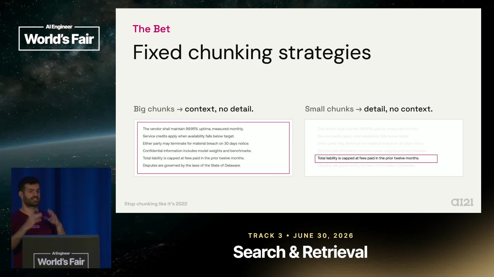
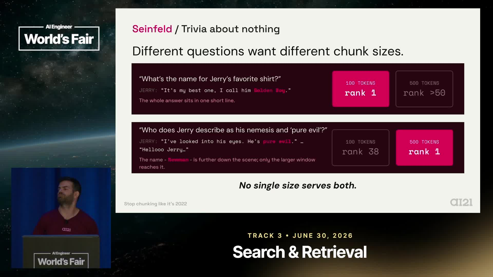
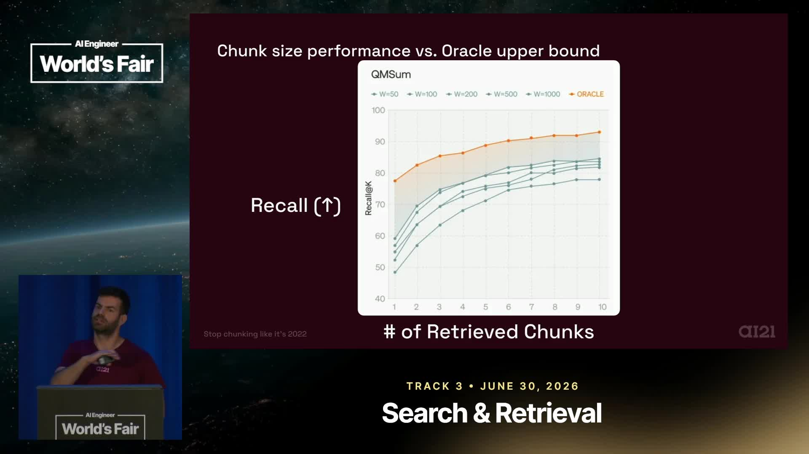
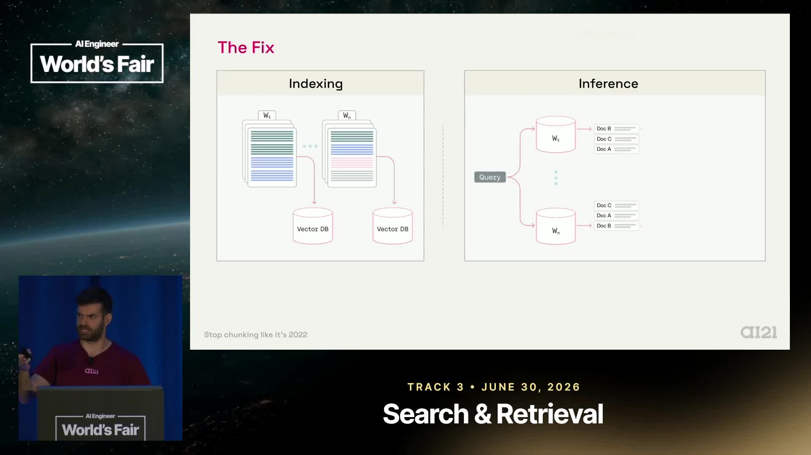
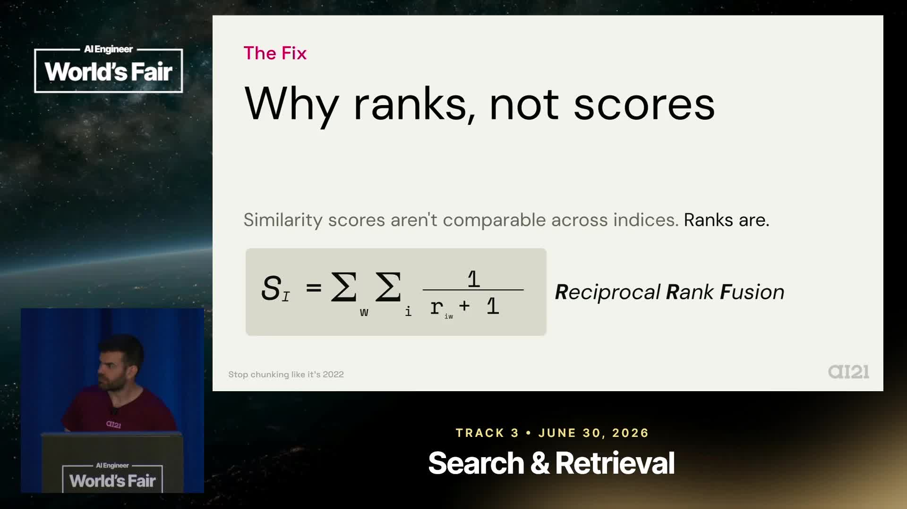
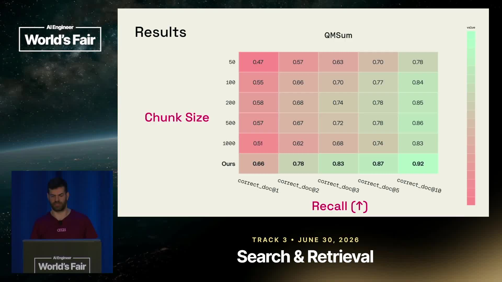

Executive summary
The best chunk size belongs to the query, not the corpus
Most RAG systems choose one chunk size during ingestion, long before they know what users will ask. Yuval Belfer's argument is that this is the wrong commitment: a precise factual query may need a small window, while a relational or narrative query may need a much larger span.
AI21's proposed solution is intentionally simple. Index each document at several window sizes. At query time, search all indices in parallel, map retrieved chunks back to their parent documents, and combine the document rankings with Reciprocal Rank Fusion (RRF).
This avoids selecting one universal size and does not require retraining the embedding model. The cost moves primarily to ingestion and storage: experiments use roughly two to five times as many chunks. Retrieval can run in parallel, while rank fusion itself is cheap.
Chunking is a lossy representation. Different losses are acceptable for different questions, so storing multiple resolutions can be more robust than finding one average compromise.
The fixed-chunk trap
Indexing makes a decision without the information it needs
A typical pipeline preprocesses documents, splits them into windows such as 512 tokens with overlap, embeds those windows, stores them, and rarely revisits the decision. Teams spend more time tuning top-k, hybrid search, reranking, and generation because those controls are available when queries arrive.
The timing creates an information mismatch:
You control the chunk size but do not know the future query.
You know the query, but the indexed boundaries and window size are already fixed.
Re-indexing the corpus for every query would theoretically use the missing information, but it would be too expensive and slow for ordinary retrieval. A production system needs to prepare useful representations in advance.
Agentic search does not remove retrieval
An agent can browse directories, use search commands, or inspect several sources. This helps when data is well organized and the search space is manageable. It becomes costly with large corpora or queries that require aggregating facts spread across many locations.
Belfer's World Cup example illustrates this. If each tournament is stored in a separate directory, answering which team won most often requires visiting every directory and aggregating the winners. An agent still needs infrastructure that helps locate and combine the evidence.
Chunking as compression
Large windows dilute detail; small windows remove context
Produce focused embeddings and often retrieve a localized fact well. They may omit the surrounding statements needed to interpret a relationship or event.
Preserve broader context and narrative relationships. A fixed-size embedding must compress more topics, which can weaken the signal of a specific fact.

Calling chunking lossy compression is a useful mental model. Embedding a window turns a variable amount of language into a fixed-dimensional vector. Information does not disappear uniformly: the representation emphasizes some signals and weakens others.
Overlap can reduce boundary failures, but it does not resolve the scale problem. A 20% overlap still represents the corpus primarily at one resolution.
The Seinfeld demonstration
Two questions from one corpus require opposite resolutions
The first query asks for the name of Jerry's favorite shirt. The answer, Golden Boy, is localized, and a 100-token chunk ranks it first. A much larger window pushes the relevant material below rank 50.
The second query asks whom Jerry describes as his nemesis and “pure evil.” The answer is Newman, but the evidence is spread through a scene rather than contained in one compact statement. Small chunks fail; larger chunks preserve enough context to retrieve the relationship.

This is stronger than saying different datasets need different settings. The same dataset and retriever need different scales for different questions. A corpus-level “best chunk size” can only optimize an average over a particular query set.
The oracle experiment
Measure the opportunity before designing the solution
The researchers build several copies of each dataset, each indexed at a different chunk size. For every evaluation query, the oracle selects whichever size happens to retrieve best. Because it sees the answer, the oracle is not deployable; it measures theoretical headroom.
Across meeting transcripts, novels, and the Seinfeld dataset, fixed-size performance curves cross. No single size dominates all queries. The gap between the best fixed choice and per-query oracle selection is reported as roughly 20–40% recall headroom.

The oracle knows which result is correct. The practical RRF method closes part of that gap. AI21's accompanying blog reports measured improvements of 1–37% across benchmark configurations, with many mature retrieval tasks improving by 1–3%.
Multiscale indexing
Store several views, then let documents collect votes
Chunk the same corpus at several window sizes.
Build a separate vector index for every resolution.
Send each query to all indices in parallel.
Map hits to documents and combine ranked lists with RRF.

The published example uses sizes such as 50, 100, 200, 500, and 1,000 tokens. These are experimental choices, not universally optimal defaults.
Why not merge similarity scores directly?
Chunks of different lengths create different distributions of embedding similarity. A score from a 100-token index is not necessarily calibrated against a score from a 1,000-token index. Direct score comparison can therefore privilege one resolution for accidental reasons.
The method instead converts chunk hits into parent-document rankings. The same documents exist across every index, so the units being combined are comparable. Each retrieved chunk votes for its document.
What RRF does
Reciprocal Rank Fusion gives larger weight to higher-ranked hits and adds that evidence across ranked lists. It uses rank position instead of raw similarity, avoiding cross-index score calibration.

Documents consistently surfaced across scales move upward. Multiple chunks from a document can also contribute evidence. RRF is a deterministic aggregation script, not another language model or learned reranker.
Results
Robust improvement without retraining
In the talk, multiscale retrieval matches or beats the best fixed size across QMSum, NarrativeQA, the in-house Seinfeld set, and FinanceBench over the displayed recall-at-k values. The accompanying AI21 post also evaluates a subset of MTEB retrieval tasks using two off-the-shelf embedding models.

The blog reports improvement in seven of eight MTEB configurations. Most gains are modest but meaningful at 1–3%, while one TREC-COVID configuration improves by 36.7%. Across the wider reported benchmarks, gains range from approximately 1% to 37%.
These are benchmark results, not a promise for every corpus. The benefit depends on query diversity, document structure, embedding model, baseline size, retrieval metric, and the quality of document identifiers used for fusion.
Cost and operational trade-offs
Buy retrieval robustness with storage and ingestion work
The main cost is indexing. AI21 reports that the number of chunks embedded and stored increases by roughly two to five times in its experiments. Smaller windows create especially many chunks, so cost is not simply the number of scales.
Retrieval latency need not grow by the same factor because searches can run concurrently. RRF adds little computation. Still, real systems must account for connection overhead, vector-database throughput, tail latency, query fan-out, and operational complexity.
Returning whole documents is an evaluation choice
The approach ranks parent documents to make different scales comparable. A generation pipeline still has to decide what context to send to the LLM. Supplying every entire document can be expensive or exceed the context budget.
A practical design can use fused document ranking as a first stage, then select relevant spans, rerank passages, or let an agent inspect the top documents. Multiscale indexing improves candidate discovery; it does not by itself solve final context assembly.
When to use it
Strong fit for heterogeneous questions over long documents
Multiscale indexing is attractive when users ask both pinpoint and contextual questions, documents contain long narratives or meetings, fixed chunk sizes trade wins across query categories, and missing evidence is more costly than extra storage.
It may be unnecessary when documents are already short, queries are highly uniform, the corpus has strong structured fields, storage dominates cost, or a single tested size already meets the product's recall target.
Before multiplying indices, segment evaluation queries by intent and inspect recall by category. The method addresses scale mismatch; it will not fix poor source documents, inadequate embeddings, stale content, missing access controls, or an evaluator that rewards the wrong evidence.
Implementation playbook
A disciplined experiment before production rollout
- Build a representative, answer-labeled query set from real usage.
- Choose several meaningfully different window sizes rather than tiny variations.
- Keep embedding model, overlap, filtering, and top-k controlled during the comparison.
- Measure each fixed index separately to expose query-level trade-offs.
- Calculate the oracle to estimate available headroom, but label it as unattainable.
- Map hits to stable parent-document IDs and fuse rankings with RRF.
- Compare fused retrieval against the strongest fixed baseline, not an arbitrary 512-token setup.
- Evaluate end-to-end answer quality as well as retrieval recall.
- Measure index size, embedding cost, p50/p95 latency, and vector-database load.
- Design a second-stage context selection strategy for long retrieved documents.
Open questions
The method deliberately leaves several choices unresolved
- Which scales? The tested sizes are partly arbitrary; a principled selection method remains future work.
- How many indices? More resolutions may improve coverage while adding diminishing returns and storage cost.
- Which fusion? RRF worked best among methods tested, but better query-aware aggregation may exist.
- Document granularity: books, reports, tickets, and pages define “parent document” differently.
- Filters and permissions: every index must apply identical tenant and access constraints before fusion.
- Updates: edits and deletes must remain synchronized across all scale-specific indices.
- Downstream context: document recall does not automatically identify the best passages for generation.
Video map
Navigate the talk
00:00 · Why chunking still matters.
01:43 · Indexing versus retrieval tuning.
03:23 · The World Cup directory example.
04:17 · Chunking as lossy compression.
06:13 · Six index copies and three datasets.
07:07 · Two Seinfeld queries, opposite requirements.
08:12 · Oracle headroom.
09:59 · The indexing-time information problem.
11:02 · Multiscale indexing and RRF.
13:50 · Results across datasets.
15:24 · Storage and latency trade-offs.
Sources and method
Transcript-grounded with the benchmark claims checked
Primary video: Stop Chunking Like It's 2022 — Yuval Belfer, AI21 Labs, published by AI Engineer. The complete English caption track reaches the closing remarks.
Experimental details and result ranges were checked against AI21's Query-Dependent RAG Chunking post by Niv Granot and Yuval Belfer. The distinction between oracle headroom and measured multiscale gains is explicit because conflating them would exaggerate the method's demonstrated improvement.
The context-assembly advice, access-control warning, and implementation checklist are editorial engineering interpretation. They are not additional experimental claims from AI21.